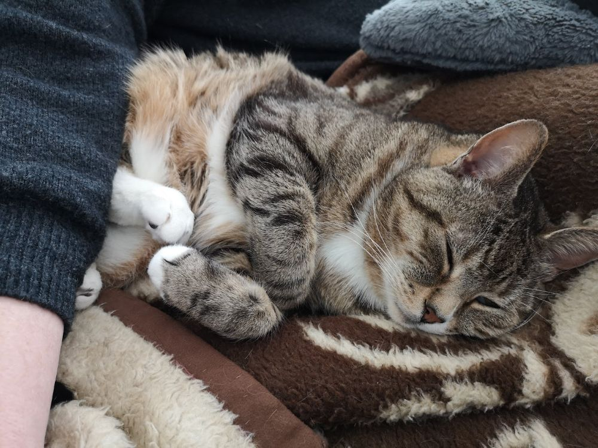

Välkommen till min hemsida!
Innehåll
Introduktion
Hejsan, jag heter Hanna Hållinder!
Jag är en nörd som älskar att rita, läsa, spela spel och en massa andra saker.
Jag bor i Uppsala som inneboende. Jag är diagnostiserad med Asperger och ADD sedan 2014.
Det har inte alltid varit det lättaste att leva med, varken för mig eller de runt omkring,
men allt eftersom tiden går, lär jag mig mer om mig själv och hur jag ska hantera tuffa situationer.
Det går inte alltid framåt men med den fantastiska hjälp jag har från min familj ska det nog gå bra.
| Namn | Hanna Hållinder |
|---|---|
| Ålder | 26 år |
| Födelsedag | 3:e September |
Familj
Min familj består av min mamma och pappa, som är skilda, och min storasyster.
Min mamma gifte om sig förra året med en jättefin man som har tre barn från ett tidigare äktenskap.
Husdjur
Jag älskar djur och har haft både kanin, hamster och katt under min uppväxt.
Mitt senaste husdjur var en katt-gentleman vid namn Ravis som blev 17 år gammal och jag saknar honom väldigt mycket.

Han var lite av en datornörd och älskade att vara med på Zoom möten och gå runt på tangentbordet.
En gång lyckades han till och med att ställa om alla mina tangentknappars funktioner.
Vet fortfarande inte hur han lyckades med detta men lyckligtvis var det inte permanent.
Intressen
För att fylla min fritid brukar jag göra självstudier i olika medium av konst.
Favorit materialen hittils är:
- Gouache
- Akvarell
- Färgpennor
Jag älskar att baka och blir nästan lika lycklig av att bjuda på bakverk som att äta de själv, nästan.
Då jag är mjölkproteinallergiker är det väldigt svårt att hitta kakor att köpa, så jag ser till att ha frysen fylld med flera olika godsaker.
För det finns väl inget som kan slå en kopp te och en riktigt god kaka?